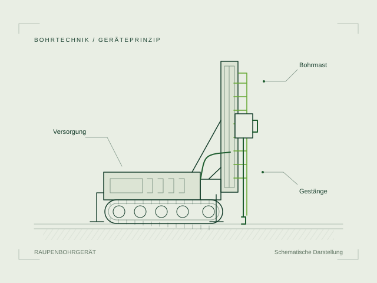
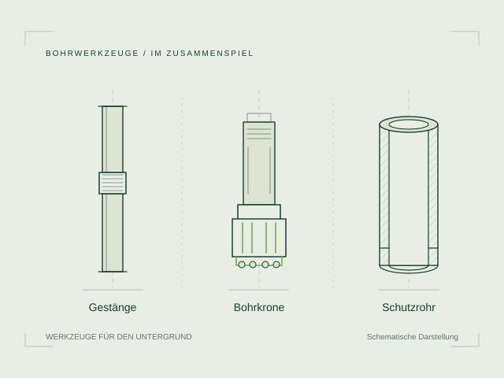
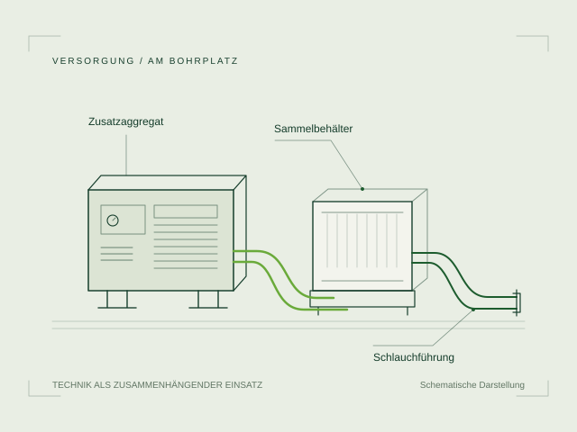

TECHNIK & AUSRÜSTUNG
Maschinenpark.
PASSENDE AUSRÜSTUNG
Auf den Untergrund
abgestimmt.
Bohrgerät, Werkzeuge und Versorgung arbeiten zusammen. Untergrund, Zufahrt und Arbeitsfläche bestimmen, welche Ausrüstung für Ihr Erdsondenprojekt benötigt wird.

EINBLICKE
Technik
im Einsatz.


Prinzipdarstellungen · ohne Hersteller- oder Modellbezug.
ÜBERSICHT
Ausrüstung
| Bereich | Aufgabe |
|---|---|
| Bohrgerät | Führung, Antrieb und Vorschub. |
| Bohrwerkzeuge & Verrohrung | Gestein lösen und das Bohrloch sichern. |
| Versorgung | Die Arbeitssysteme am Bohrplatz verbinden. |